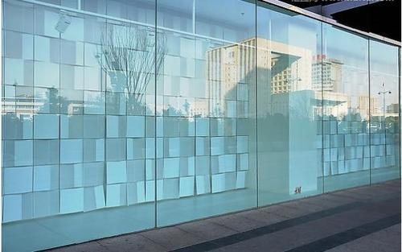

TEMPERED/TOUGHENED GLASS
For years tempered/toughened glass has been used in many forms of architecture for its extra durability and strength. Toughened glass is usually four to five times the strength of conventional annealed glass. And the reason behind such strength is the process involved in making tempered or toughened glass. Toughened glass is processed by controlled thermal or chemical treatments. Therefore, it comprises the capacity to bear greater temperature and differentials. Tempering causes compression in the outer surface while putting the interior into tension. And the strain caused due to the compression and tension leads to the smashing of the glass into small chunks when broken instead of fragmenting into sharp pieces as ordinary annealed glass does. This particular glass feature is less likely to cause injury. That is why toughened glass has become increasingly popular in recent years.

Today's architects make every effort to achieve a unique look in their projects without compromising safety or material quality. And to keep up with their requirements and the surge in demand for custom toughened or tempered glass for different projects, we at Tufftron leave no stone unturned.
Applications: